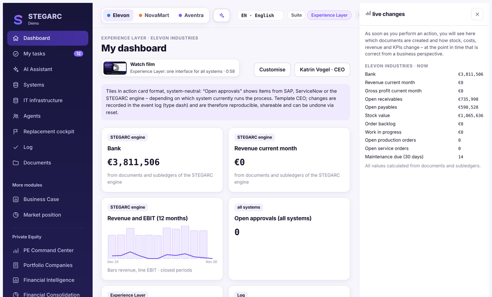
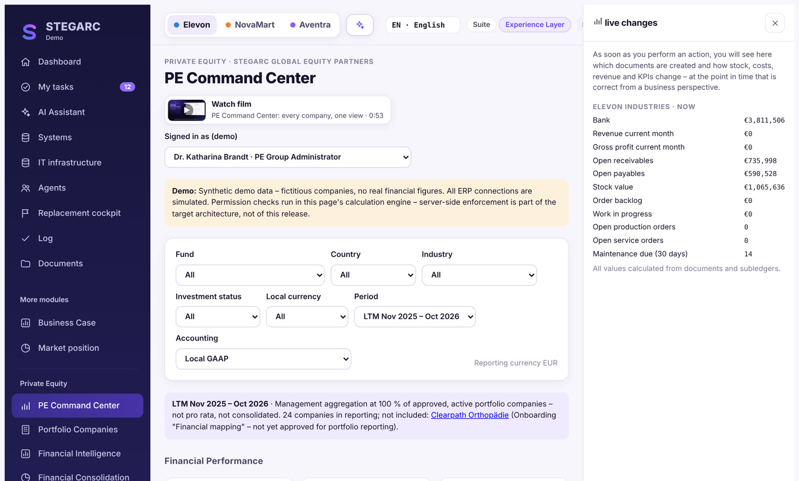

ERP transformation
Strategy, target picture, architecture and delivery – vendor-independent and end-to-end.
RISE or alternatives?Vendor-independent ERP transformation, SAP S/4HANA, Microsoft Dynamics, Oracle, complex cutovers and go-lives, and AI solutions – with delivery strength, more than 20 years of experience and a clear focus on results.

Transparent steering, reliable data and measurable progress for a safe go-live. With STEGARC you see tasks, approvals and KPIs from all systems in one interface.
Six core services for successful transformations, complemented by data migration, custom development and the STEGARC platform.
Strategy, target picture, architecture and delivery – vendor-independent and end-to-end.
RISE or alternatives?Planning, implementation, conversion and rollout – including Central Finance and international deployments.
ECC end of maintenance 2027Selection, implementation and harmonisation of business processes on Dynamics 365.
Migration and integration in complex system landscapes – stable and future-proof.
Planning, mock cutovers and orchestration for a safe production start with minimal risk.
Ten cutover rulesPragmatic AI use cases with human approval and measurable value for your processes.
AI in ERP, done rightA structured approach, strong delivery and measurable benefit – from concept to go-live. From more than 20 years of programmes at DAX-listed groups and mid-sized companies.
“Not possible.”Possible. Just not in the standard.
Many requirements do not fail on technology but because nobody wants to take responsibility for a solution outside the standard. I do – with an architecture that keeps the ERP core clean, with tests and with documentation your team can carry forward.
AI is not an end in itself. I use it where it takes repetitive work away, prepares decisions better or makes knowledge faster to find – and I say honestly when a classic rule is the better answer.
Example with made-up data. Nothing is posted until a person approves – for postings, approvals and payments without exception.
In every phase you know what happens, what it costs and what has to be decided next.
Programmes at DAX-listed groups and internationally operating companies – and special cases in mid-sized businesses that had no standard answer.
I deliberately do not name clients here. For a personal exchange I am happy to share references and put you in touch with contacts.
My AI-native platform, born from the problems I kept seeing in transformations. It sits on top of existing systems and grows step by step into an ERP of its own.

I am a consultant, a doer and an entrepreneur. For more than 20 years I have been where ERP programmes are decided: in planning, in the cutover room and on the Monday after go-live.
I come from SAP consulting. In 2011 I founded my first consulting company and ran it as managing director for ten years. Since then I have been leading SAP programmes at DAX-listed groups and internationally operating companies, with a focus on SAP S/4HANA, Central Finance and HR.
In Switzerland I was responsible, as Area Deployment Manager, for the deployment of a region in one of the largest SAP S/4HANA rollouts. As Global Cutover Manager I steered go-lives across countries and time zones; as programme lead I took HR transformations from SAP HCM to SuccessFactors through to international rollout. And again and again I have supported companies in special cases: solution designed, delivered and cleanly handed over into regular operations. Most recently I worked as ERP transformation advisor and solution architect.
One thing I have learned is that projects rarely fail because of the software. They fail because of unclear decisions, because nobody owns the special cases, and because of plans that only work on slides. That is where I come in.
You always talk to me directly. My recommendations follow your needs, not a partner programme. I am happy to share references and contacts with former clients in a personal conversation.
I live with my family in Eppingen in south-west Germany. In my spare time I chair and head-coach an artistic roller skating club – so teamwork, patience and performance under pressure are familiar to me beyond IT as well.
German, English, French
No. My background is mainly SAP, but I advise independently of vendors – including Microsoft Dynamics 365, Oracle and ERP systems for mid-sized companies.
Mainstream maintenance for SAP ECC 6.0 ends at the end of 2027. Paid extensions run until 2030 and, under conditions, beyond. More on the blog.
Yes, that is a core focus: extensions, interfaces, portals and services beside the ERP core – tested, documented and update-safe.
Where it measurably takes work away. Decisions with impact such as postings or payments are always confirmed by a person.
Yes. I deliberately do not name clients on the website, but I am happy to share references and contacts in a personal conversation.
With a free first call. Then I propose a compact start, usually a workshop with a clear result.
An ERP decision, a running project, a special requirement or an AI idea: I will get back to you with a proposal for a first, free conversation.